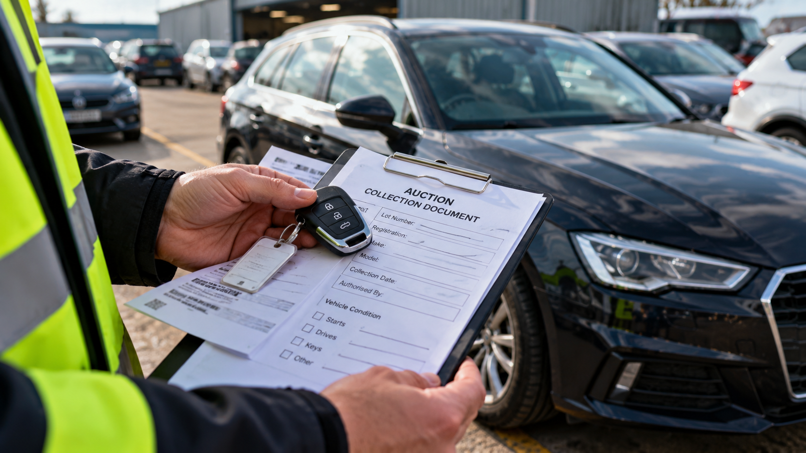

Buying a vehicle at auction can be a way to find anything from an everyday car to a project vehicle, but winning the bid is only part of the process. You also need to know when the vehicle must be collected, whether it can legally and safely be driven away, and how it will reach its destination.
If you are arranging vehicle transport, getting the right information together before collection can make the process much simpler.
Before You Bid, Check the Vehicle
It can be tempting to concentrate on the photographs and the current bid, but there are several things worth checking before committing to a vehicle.
GOV.UK recommends checking that the registration number, make, model and other details match DVLA records. Buyers can also check the vehicle's MOT history and whether there are outstanding safety recalls.
The V5C registration certificate is another important consideration. DVLA advises buyers not to buy a vehicle that does not have a V5C.
An auction listing may also describe the vehicle's condition, whether it starts or drives, and any known damage. Read those details carefully, but remember that the practical condition of a vehicle can affect how it needs to be collected.
Remember the Costs Beyond the Winning Bid
The figure you bid may not be the final amount you pay.
Auction invoices can include charges in addition to the hammer price, such as a buyer's premium and other service charges. HMRC guidance concerning vehicles bought at auction specifically recognises buyer's premiums and other auction charges.
The auction house's own terms should therefore be checked before bidding.
Transport is another cost to consider, particularly if the auction is a long distance from your home or the vehicle cannot be driven.
You've Won the Vehicle — What Happens Next?
Once payment has been completed, check the auction house's collection instructions.
Procedures vary between auction companies and sites. Depending on the auction, you may need information such as a collection reference, lot number, proof that the vehicle has been released, identification or other collection documentation.
There may also be a deadline for removing the vehicle from the site.

Can You Just Drive the Car Home?
Not necessarily.
First, the vehicle itself must be suitable for road use. Its MOT status, condition and any known defects need to be considered.
There are also legal requirements. GOV.UK states that a vehicle must be insured before it is used on the road and must be taxed before it is used on the road.
When buying a used vehicle, the buyer can normally use the green new-keeper slip from the V5C to tax it.
So seeing that a vehicle was taxed by its previous keeper does not mean you can simply drive it away under that tax.
If there is uncertainty about the vehicle's mechanical condition or roadworthiness, transporting it rather than driving it can avoid relying on an unfamiliar vehicle for the journey home.
What If the Auction Car Does Not Run?
A non-running auction vehicle can often still be transported.
The important question is not simply whether the engine starts. The transporter needs to understand the vehicle's actual condition.
- Does it roll freely?
- Does it steer?
- Do the brakes release?
- Are the tyres inflated?
- Are all four wheels present?
- Is there accident or suspension damage?
- Are the keys available?
A car that does not start but rolls and steers presents a very different collection from a vehicle with locked wheels or substantial accident damage.
We cover this subject in more detail in our guide Can a Non-Running Car Be Transported?
Give the Transporter Accurate Information
Before arranging collection, provide as much useful information as possible.
The key details normally include the vehicle's make and model, collection location, delivery location and condition. If you know that the vehicle does not start, roll or steer normally, say so before collection.
Photographs can also be useful when the vehicle has visible damage or unusual loading requirements.
Accurate information helps determine whether the vehicle can be collected as planned and reduces the chance of unexpected problems when the transporter arrives.
Don't Forget About Access
The condition of the vehicle is only part of the collection. Access to the vehicle also matters.
Auction compounds can have their own collection areas, opening times and procedures. The vehicle may also be parked among other vehicles rather than immediately accessible for loading.
This is another reason to check the auction's collection instructions rather than simply arranging a date and assuming the vehicle will be ready.
Keys and Release Information
Confirm whether keys are available and how they will be handed over.
You should also make sure the auction has everything it requires before another person collects the vehicle on your behalf.
If a transporter is collecting the vehicle, give them the necessary collection or release information supplied by the auction house.
Because procedures vary between auction companies, always follow the instructions for the particular auction from which you have purchased the vehicle.
What If You Are Buying the Car as a Project?
Not every auction vehicle is intended to go straight back onto the road.
You may be buying a damaged vehicle, restoration project or car that will remain on private property while work is carried out.
If you buy a vehicle and intend to keep it off the public road, you may need to make a SORN. A SORN made by the previous keeper does not transfer to the new keeper.
A SORN vehicle must be kept off the public road, for example on a driveway, in a garage or on private land.
Transporting the vehicle allows it to be moved to its destination without relying on it being suitable to drive there.

Arrange Collection Before the Deadline
Do not leave transport until the last minute.
1. When can it be collected?
Check the auction site's collection days and opening hours.
2. When must it be removed?
Find out whether a collection deadline applies.
3. What is required for release?
Check the paperwork, reference numbers or authorisation required.
4. What condition is the vehicle in?
Confirm whether it starts, rolls, steers and has usable tyres.
5. Where is it going?
Have the complete delivery address or postcode ready.
With those details available, arranging transport becomes much more straightforward.
Before the Vehicle Is Collected
A simple final check can prevent unnecessary delays:
- Auction collection details — confirmed
- Payment/release requirements — completed
- Collection deadline — checked
- Vehicle make and model — confirmed
- Vehicle condition — known as far as possible
- Keys — availability confirmed
- Collection location — confirmed
- Delivery location — confirmed
- Transport arranged — booked
The Simple Rule to Remember
Winning an auction vehicle does not automatically mean it is ready to be driven home.
A little preparation before collection can make the difference between a straightforward vehicle movement and a transporter arriving without the information or access needed to complete the job.
Sources
This guide was checked against current UK government information on 2 October 2026.
BOUGHT A VEHICLE AT AUCTION?
Need it collected?
Tell ResQ Direct where the vehicle is, where it needs to go and what you know about its condition.
GET A QUOTE